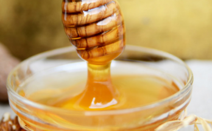

ကလေးတွေကို ပျားရည်ကျွေးလို့ ရပါသလား

ကလေးတွေကို ပျားရည်ကျွေးလို့ ရပါသလား
ပျားရည်ဟာ သဘာဝကရတဲ့ သကြားဓာတ်ဖြစ်ပြီး ကျန်းမာရေး အကျိုးကျေးဇူးများစွာ ရှိပါတယ်။ ဒါပေမဲ့ တစ်နှစ်အောက် ကလေးတွေကိုတော့ ပျားရည်ကျွေးလို့မရပါဘူး။ ဒီတော့ ဘာကြောင့် ကျွေးလို့ မရလဲဆိုတာကို ကြည့်ကျရအောင်။
တစ်နှစ်အောက် ကလေးတွေကို ဘာလို့ ပျားရည်ကျွေးလို့ မရတာလဲ
ပျားရည်မှာ ဖွံ့ဖြိုးဆဲ ကလေးငယ်တွေအတွက် အာဟာရဓာတ်တွေ ပါဝင်ပါတယ်။ ဒါပေမဲ့ တစ်နှစ်အောက် ကလေးတွေကိုတော့ ပျားရည်ကျွေးဖို့ မသင့်ပါဘူး။ ဘာဖြစ်လို့လဲဆိုတော့ Clostridium Botulism ဆိုတဲ့ ပိုးကြောင့်ပါ။ ပျားရည်ဟာ Clostridium Botulism ပိုးရဲ့ ဥအဆင့် (Spores) ကို အဓိက သယ်ဆောင်တတ်တဲ့ ပစ္စည်းဖြစ်နေပါတယ်။ ဒီပိုးတွေဟာ မြေကြီးထဲမှာ သဘာဝအတိုင်း ရှိနေပြီး လေထုထဲကို Spores တွေ ထုတ်လွှတ်ပါတယ်။ Spores ဆိုတာက ပတ်ဝန်းကျင်ဓာတ်ကို ခံနိုင်ပြီး မျိုးပွားနိုင်တဲ့ ဥအဆင့်လိုမျိုး ဖြစ်ပါတယ်။ သင့်တော်တဲ့ ပတ်ဝန်းကျင် အခြေအနေရှိတဲ့ အခါမှာ Spores ကနေ ပိုးအဖြစ် ပြန်ပေါက်ဖွား ပွားများလာပါတော့တယ်။
ပျားရည်ဟာ သဘာဝကရတဲ့ ပစ္စည်းဖြစ်တဲ့ အတွက်ကြောင့်မို့ Clostridium Botulism ရဲ့ Spores တွေ ပါလာပါတယ်။ ဒီလို ပိုးပါတဲ့ ပျားရည်ကို စားသုံးမိတယ်အခါမှာ ပိုးက အစာအိမ်နဲ့ အူလမ်းကြောင်းထဲ ရောက်သွားပါတော့တယ်။
တစ်နှစ်အထက် ကလေးတွေမှာဆို ခန္ဓာကို်ယ်က ပိုး မပွားအောင် ကာကွယ်နိုင်စွမ်း ရှိသွားပါပြီ။ တစ်နှစ်အောက် ကလေးတွေမှာတော့ ဒီလို ကာကွယ်နိုင်စွမ်း မရှိတဲ့အတွက် ပိုးတွေက အူလမ်းကြောင်းမှာ ပွားများလာနိုင်ပြီး ကလေးငယ် အဆိပ်သင့်ခြင်း (Infant Botulism) ဆိုတာကို ဖြစ်စေပါတယ်။
ကလေးငယ်အဆိပ်သင့်ခြင်း ( Infant Botulism ) ဆိုတာ ဘာလဲ
ကလေးငယ်အဆိပ်သင့်ခြင်း ( Infant Botulism ) ကို ခြောက်လအောက် ကလေးတွေမှာ တွေ့ရများပါတယ်။ ခြောက်လကနေ တစ်နှစ်ကြား ကလေးတွေမှာလည်းတွေ့နိုင်ပါတယ်။ အာရုံကြောကို ထိခိုက်နိုင်တဲ့ Botulism အဆိပ်ကြောင့် ဖြစ်တာပါ။
ဒီအရွယ် ကလေးတွေမှာ ကိုယ်တွင်းကလီစာတွေ အပြည့်အဝ မဖွံ့ဖြိုးသေးပါဘူး။ ဒါကြောင့် အူလမ်းကြောင်းက ရှိသင့်တဲ့ ပိုးမွှားတွေလည်း လုံလုံလောက်လောက် မရှိသေးပါဘူး။ ဒါကြောင့်မို့လို့ ပြင်ပက ဝင်ရောက်လာတဲ့ပိုးတွေကို တိုက်ထုတ်နိုင်စွမ်း မရှိပါဘူး။ ဒါ့အပြင် အသည်းကလည်း လုံလောက်တဲ့ သည်းခြေရည်ကို ထုတ်နိုင်စွမ်း မရှိတဲ့အတွက် Botulism Spores တွေကို တိုက်ခိုက်နိုင်စွမ်း မရှိပါဘူး။
ကလေးငယ်ဟာ ပျားရည်စားမိတဲ့အခါ Botulism Spores တွေဟာ ရှိသင့်တဲ့ ပိုးမွှားတွေ မလုံလောက်သေးတဲ့ အူလမ်းကြောင်းမှာ အလျှင်အမြန်ပဲ ပွားများလာပါတယ်။ ပွားများလာတဲ့ Clostridium Botulism ပိုးတွေက Botulism Toxin လို့ခေါ်တဲ့ အဆိပ်ကို ထုတ်ပါတယ်။
ဒီအဆိပ်က ကလေးငယ်ရဲ့ အာရုံကြောအဖွဲ့အစည်းကို တိုက်ခိုက်ပြီး အာရုံကြောတွေကနေ ဆက်သွယ်မှုနဲ့ တုန့်ပြန်နိုင်စွမ်းကို တားဆီးလိုက်ပါတယ်။ တုံပြန်နိုင်စွမ်း မရှိတော့တဲ့အခါမှာ ကြွက်သားတွေရဲ့ စွမ်းဆောင်ရည် ဆုံးရှံူးသွားပြီး နောက်ဆုံးမှာ ခြေတွေလက်တွေ မလှုပ်နိုင်တော့တဲ့ အထိ ဖြစ်သွားပါတယ်။
ဒီလိုဆိုးကျိုးတွေ ရှိတဲ့အတွက်ကြောင့် ဆရာဝန်တွေက အသက်တစ်နှစ်အောက်ကလေးကို ပျားရည် မကျွေးဖို့ တားမြစ်ထားပါတယ်။ အသက်တစ်နှစ်ကျော်တဲ့အခါမှာတော့ အသည်းကလည်း သည်းခြေရည် လုံလုံလောက်လာက် ထုတ်နိုင်လာပြီ ဖြစ်သလို အူလမ်းကြောင်းထဲမှာလည်း ရှိသင့်တဲ့ ပိုးတွေ ရှိလာပြီ ဖြစ်တဲ့အတွက် Clostridium Botulism ပိုးဝင်လာမယ် ဆိုရင်လည်း တိုက်ထုတ်နိုင်စွမ်း ရှိသွားပါပြီ။
တစ်နှစ်အောက် ကလေးကို ပျားရည် မတော်တဆ ကျွေးမိသွားတယ်ဆို ဘာလုပ်မလဲ
- စိတ်အေးအေးထားပါ။ အဆိပ်သင့်တာဟာ ချက်ချင်း မဖြစ်တတ်ပါဘူး။ စိတ်အေးအေးထားပြီး စောင့်ကြည့်ပါ။
- ဆရာဝန်နဲ့ ပြပါ။ ကလေးအထူးကုနဲ့ သေချာတိုင်ပင်ပြီး ဘယ်လောက်စားမိတယ် ဘယ်အချိန်က စားထားတာလဲကို သေသေချာချာ ပြောပြပါ။
- ဂရုစိုက်စောင့်ကြည့်ပါ။ အဆိပ်သင့်တဲ့ လက္ခဏာတွေဟာ တစ်လလောက်ကြာမှ ပေါ်လာနိုင်တဲ့ အတွက် သတိထားစောင့်ကြည့်ဖို့ လိုပါတယ်။
- ကလေးတစ်ခုခု ဖြစ်တယ် ဆိုရင် ဆရာဝန်နဲ့ အမြန်ဆုံး ပြသပါ။
- မိခင်နို့ကို ပုံမှန်တိုင်းပဲ အချိန်မှန်မှန် တိုက်ပါ။ မိခင်နို့ဟာ အူလမ်းကြောင်းအတွင်း ရှိသင့်တဲ့ ပိုးတွေပေါက်ပွားတာကို အားပေးတဲ့ အတွက် Clostridium Botulism ပိုးပွားများခြင်းကို တားဆီးပေးနိုင်ပါတယ်။
ရက် ၃၀ ထိ ကလေးမှာ အဆိပ်သင့်တဲ့ လက္ခဏာမပြဘူးဆိုရင်တော့ စိတ်ချရပြီလို့ ဆိုနိုင်ပါတယ်။ တကယ် စိတ်ချ ရ၊ မရကို ဆုံးဖြတ်နိုင်ဖို့တော့ ဆရာဝန်နဲ့ ပြသစစ်ဆေးဖို့လိုအပ်ပါတယ်။
ကလေးငယ်တိုင်း ကျန်းမာ ချမ်းသာကြပါစေ။
Source-Dr.MTA